| ・山鉾建て (H25.07.12) | |||
今年もM1恒例の山鉾立て見学（K林は置いてきた はっきり言ってこの暑さにはついてこれそうもない）。去年より組み上がっていました。しかし、今日はとんでもなく暑かったです。 |
|||
|
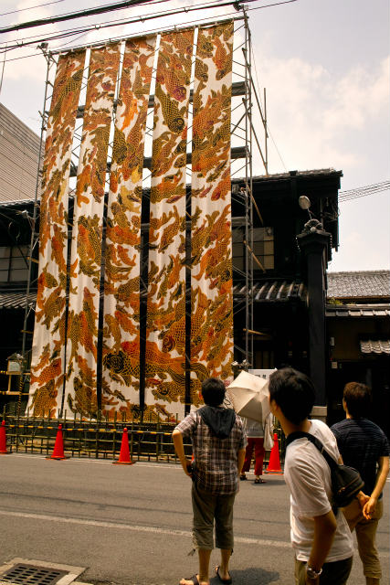
275匹の鯉 |
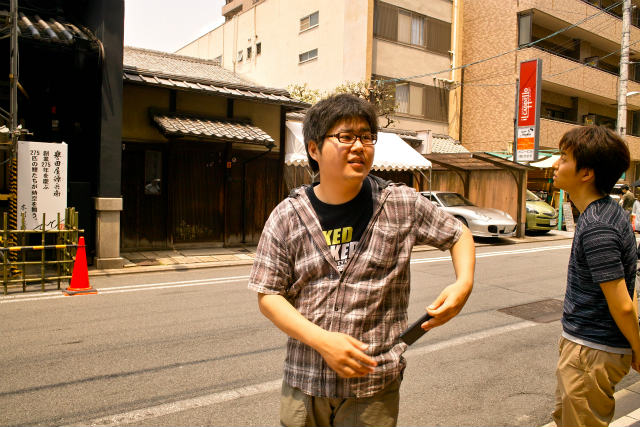
おれは見つけたで | ||
|
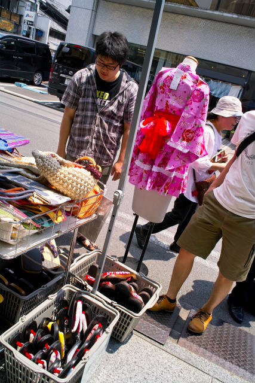
浴衣とか雪駄とか |
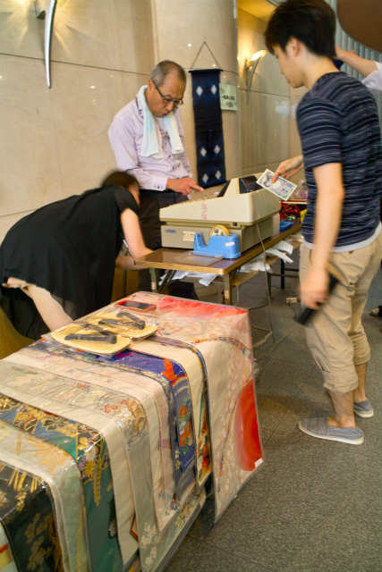
明日弓道部のOB会あるので新調 | ||
|
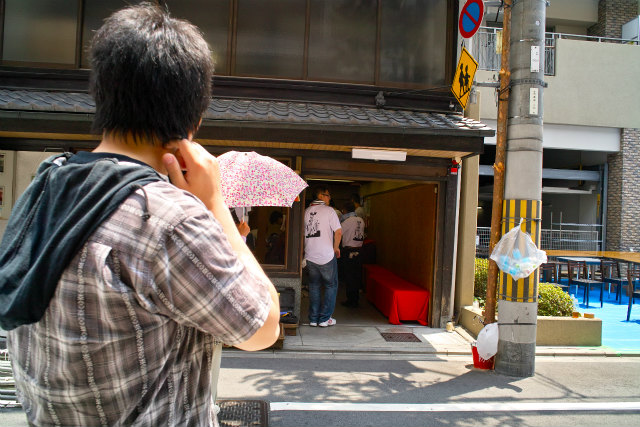
まだ準備中 |
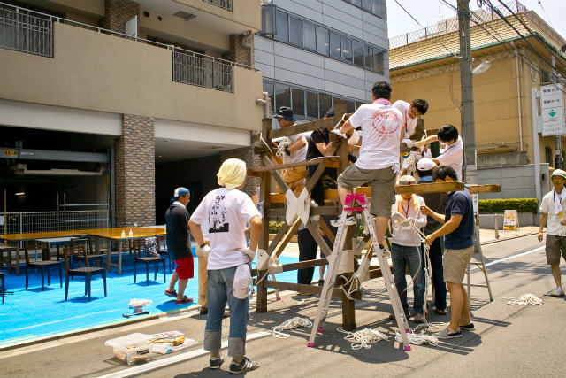
ちっさい | ||
|
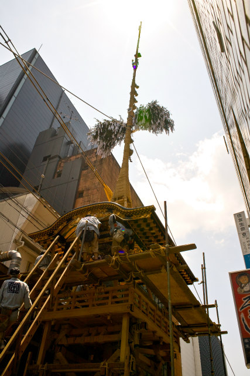
でかい菊水鉾 |
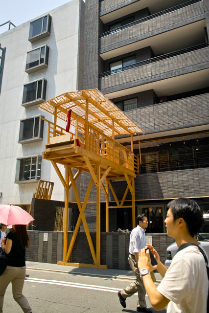
係留場 | ||
|
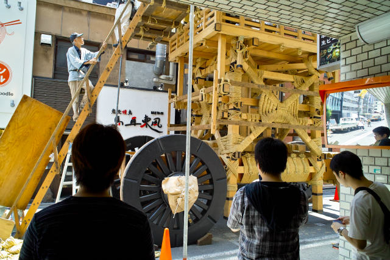
縄ってダンパの役割あるのか？ |
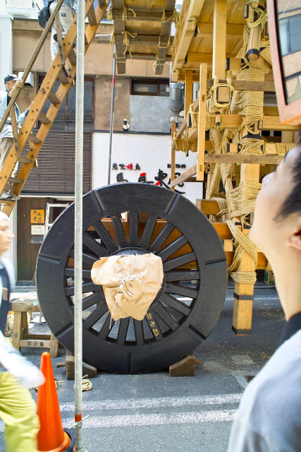
ベヤリング無しっぽい | ||
|
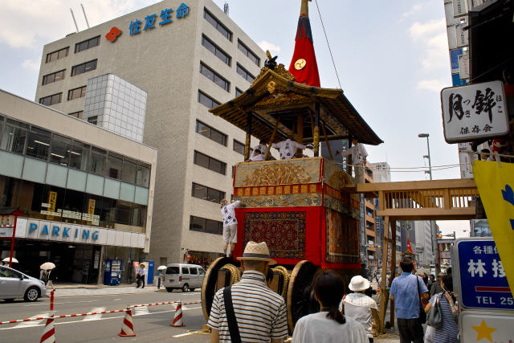
月鉾 |
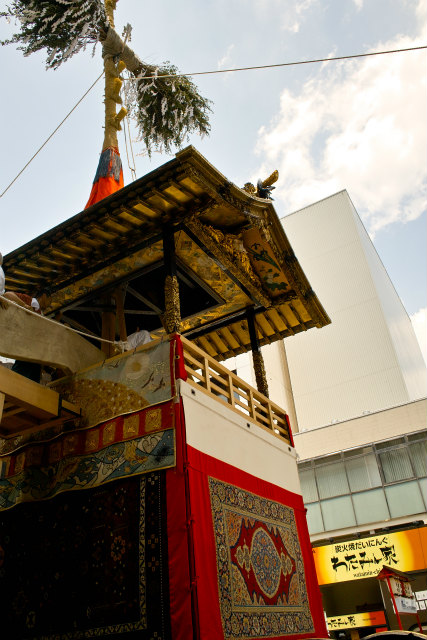
贅を凝らした作 | ||
|
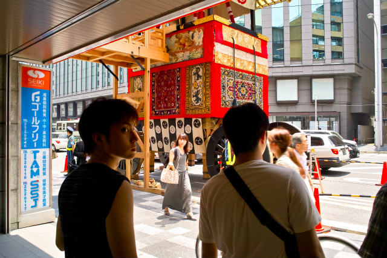
暑なってきたました |
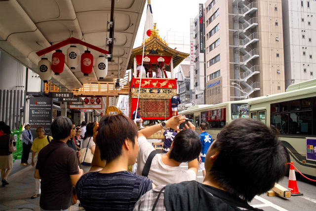
長刀鉾を最後に見ておしまい | ||